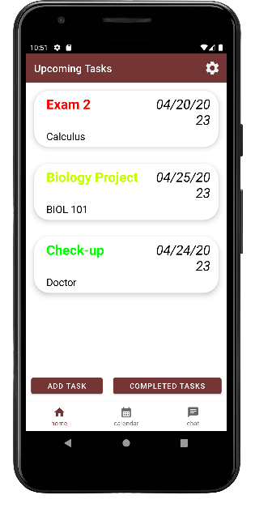
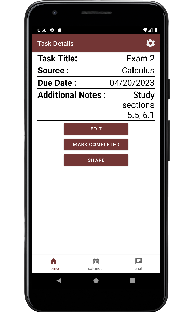
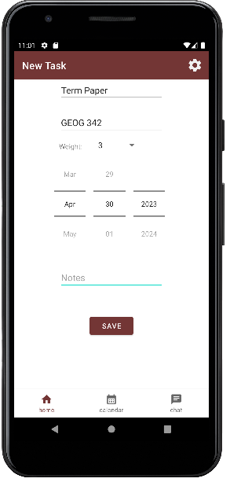
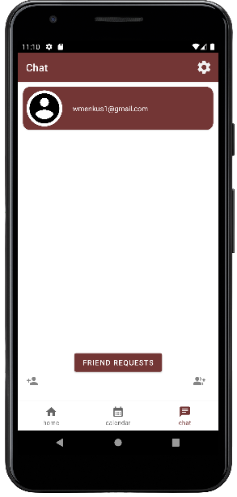
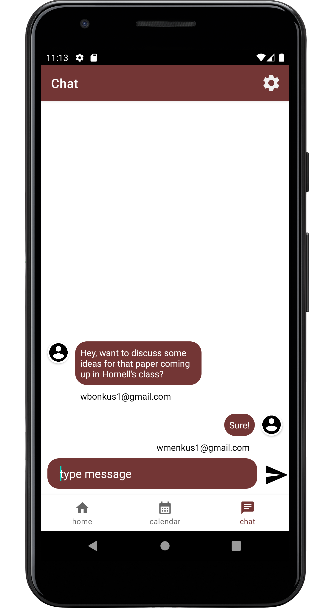

What is Janus?
Janus is an app that helps you maintain an organized, accurate, and helpful to-do list. With Janus, you can easily add and delete upcoming tasks, which will be automatically sorted and color-coded based on importance and urgency, so that you never have to think about what needs to be done first. Janus also provides a chat interface to make collaboration with other Janus users simple, and a calendar screen to better visualize upcoming deadlines.
How to use the app
First, visit our GitHub and download the .apk to an Android device of your choosing. Then click the Janus app icon and register to get started!
- Upcoming tasks shows everything on your to-do list, sorted and color coded. The more red the task is, the more important it is to get it done!
  - To add something to your to-do list, click the "Add Task" button on the homescreen
and enter the details pertaining to the task you wish to keep track of.
 - Navigate to Janus's built-in chat page through the bottom navigation bar. Here you can send friend requests, chat with friends about your to-do list, and even create group chats.
  - The calendar page gives you a quick visual overview of your upcoming deadlines.